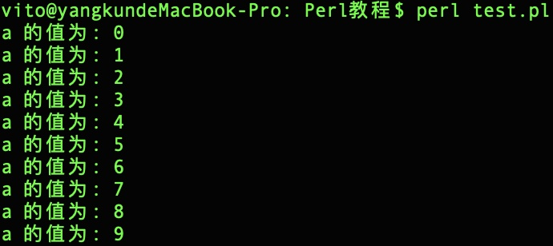

Perl 循环
有的时候，我们可能需要多次执行同一块代码。一般情况下，语句是按顺序执行的：函数中的第一个语句先执行，接着是第二个语句，依此类推。
编程语言提供了更为复杂执行路径的多种控制结构。
循环语句允许我们多次执行一个语句或语句组。
注意，数字 0, 字符串 '0' 、 "" , 空 list () , 和 undef 为 false ，其他值均为 true。 true 前面使用 ! 或 not则返回 false 。
Perl 语言提供了以下几种循环类型:
| 循环类型 | 描述 |
|---|---|
| 当给定条件为 true 时，重复执行语句或语句组。循环主体执行之前会先测试条件。 | |
| 重复执行语句或语句组，直到给定的条件为 true。 循环主体执行之前会先测试条件。 | |
| 多次执行一个语句序列，简化管理循环变量的代码。 | |
| foreach 循环用于迭代一个列表或集合变量的值。 | |
| 除了它是在循环主体结尾测试条件外，其他与 while 语句类似。 | |
| 您可以在 while、for 或 do..while 循环内使用一个或多个循环。 |
WHILE 循环
while 语句在给定条件为 true 时，重复执行语句或语句组。循环主体执行之前会先测试条件。
语法
语法格式如下所示：
while(condition) { statement(s); }
在这里，statement(s) 可以是一个单独的语句，也可以是几个语句组成的代码块。
condition 可以是任意的表达式，当条件为 true 时执行循环。 当条件为 false 时，程序流将退出循环。
流程图

图表中，while 循环的关键点是循环可能一次都不会执行。当条件为 false 时，会跳过循环主体，直接执行紧接着 while 循环的下一条语句。
实例
程序中在变量 $a 小于 20 时执行循环体，在变量 $a 大于等于 20 时，退出循环。
执行以上程序，输出结果为：
UNTIL 循环
until 语句在给定条件为 false 时，重复执行语句或语句组。
语法
语法格式如下所示：
while(condition) { statement(s); }
在这里，statement(s) 可以是一个单独的语句，也可以是几个语句组成的代码块。
condition 可以是任意的表达式，当条件为 false 时执行循环。 当条件为 true 时，程序流将继续执行紧接着循环的下一条语句。
流程图
图表中，until 循环的关键点是循环可能一次都不会执行。当条件为 true 时，会跳过循环主体，直接执行紧接着 while 循环的下一条语句。
实例
程序中在变量 $a 小于 10 时执行循环体，在变量 $a 大于 10 时，退出循环。
执行以上程序，输出结果为：
FOR 循环
Perl for 循环用于多次执行一个语句序列，简化管理循环变量的代码。
语法
语法格式如下所示：
for ( init; condition; increment ){ statement(s); }
下面是 for 循环的控制流程解析：
- init 会首先被执行，且只会执行一次。这一步允许您声明并初始化任何循环控制变量。您也可以不在这里写任何语句，只要有一个分号出现即可。
- 接下来，会判断 condition。如果为 true，则执行循环主体。如果为 false，则不执行循环主体，且控制流会跳转到紧接着 for 循环的下一条语句。
- 在执行完 for 循环主体后，控制流会跳回上面的 increment 语句。该语句允许您更新循环控制变量。该语句可以留空，只要在条件后有一个分号出现即可。
- 条件再次被判断。如果为 true，则执行循环，这个过程会不断重复（循环主体，然后增加步值，再然后重新判断条件）。在条件变为 false 时，for 循环终止。
在这里，statement(s) 可以是一个单独的语句，也可以是几个语句组成的代码块。
condition 可以是任意的表达式，当条件为 true 时执行循环，当条件为 false 时，退出循环。
流程图

实例
执行以上程序，输出结果为：

FOREACH 循环
Perl foreach 循环用于迭代一个列表或集合变量的值。
语法
语法格式如下所示：
foreach var (list) { ... }
流程图

实例
执行以上程序，输出结果为：

DO...WHILE 循环
不像 for 和 while 循环，它们是在循环头部测试循环条件。在 Perl 语言中，do...while 循环是在循环的尾部检查它的条件。
do...while 循环与 while 循环类似，但是 do...while 循环会确保至少执行一次循环。
语法
语法格式如下所示：
do { statement(s); }while( condition );
请注意，条件表达式出现在循环的尾部，所以循环中的 statement(s) 会在条件被测试之前至少执行一次。
如果条件为 true，控制流会跳转回上面的 do，然后重新执行循环中的 statement(s)。这个过程会不断重复，直到给定条件变为 false 为止。
流程图

实例
执行以上程序，输出结果为：
循环嵌套
Perl 语言允许在一个循环内使用另一个循环，下面演示几个实例来说明这个概念。
语法
嵌套 for 循环语句的语法：
嵌套 while 循环语句的语法：
嵌套 do...while 循环语句的语法：
嵌套 until 循环语句的语法：
嵌套 foreach 循环语句的语法：
实例
执行以上程序，输出结果为：
无限循环
如果条件永远不为 false，则循环将变成无限循环。
for 循环在传统意义上可用于实现无限循环。
由于构成循环的三个表达式中任何一个都不是必需的，您可以将某些条件表达式留空来构成一个无限循环。
实例
你可以按下 Ctrl + C 键来终止循环。
当条件表达式不存在时，它被假设为 true 。您也可以设置一个初始值和增量表达式，但是一般情况下，Perl 程序员偏向于使用 for(;;) 结构来表示一个无限循环。